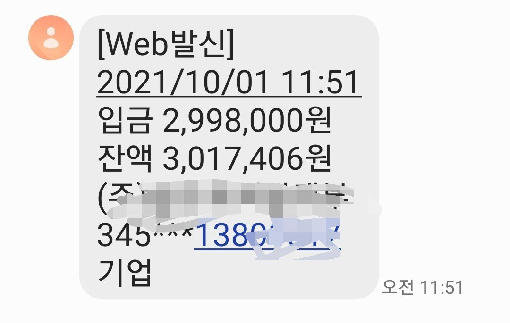
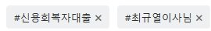

[신용회복자대출] 최규열 이사님 감사합니다

직업은 프리랜서
신용회복중 7회차 근무는 10개월
4대보험 무 연봉 3000
신용점수 601점
신용회복 200 엔알 300
대출받은지 얼마 되지 않아서 안될꺼라고 포기하는 마음으로 상담받았었는데 결과는 승인~~~
너무 좋은결과를 얻어서 너무감사합니다
첫날 결과가 좋지 않아서 포기하자 싶었는데 이사님이 내일 다시 진행해본신다고 꼭 받을실수 있다고 말씀해주셔서 일단 내일 기다려보자 했는데 담날 9시 조금 지나고 나니 연락이 오셔서 오전중에 승인 났어요
정말 힘들게 승인이 난걸 알고 있어서 너무 죄송하기도 하고 감사했어요~~~
앞으론 무슨일인듯 잘될꺼 같은 희망이 생겼어요~~
이사님 신경써주시느라 너무 고생많으셨어요~~ 정말 감사합니다~~^
